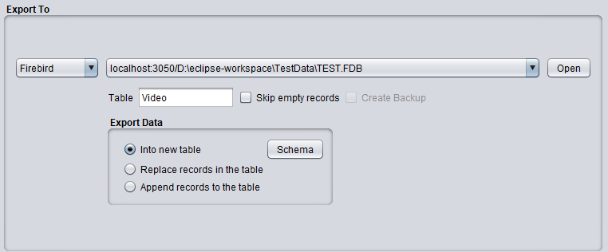
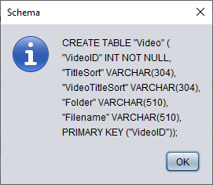

Export To MS-Acess, Firebird or SQL Server

Export Data
- Into new table
This option creates a new table and writes the records into it. Should the table already exists in the
database then DBConvert/FNprog2PDA will overwrite it with a DROP/CREATE table.
Schema
This button displays the SQL statement that will be used to create the [new] table.
Example:

- Replace records in the table
This option erases previous existing records in the table with a DELETE statement and writes the new
records into it. Unlike the previous option it will keep the current table schema intact.
- Append records to the table
With this option DBConvert/FNProg2PDA will try to insert new records into the table, while keeping the
existing ones.
Warning
"Into new table" should be used with extreme care. The new table is created according to the basic
specifications provided on the "Export Fields" tab. It doesn't respect pre-existing indices, triggers,
constraints or foreign keys. So, if you want to keep the existing table structure/schema intact but
start with an empty table then you should use the second option instead.